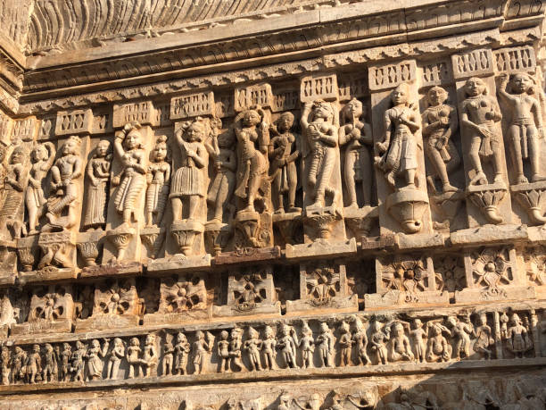
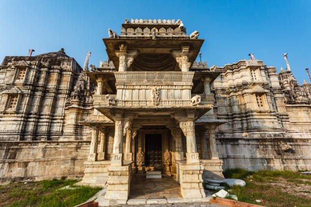
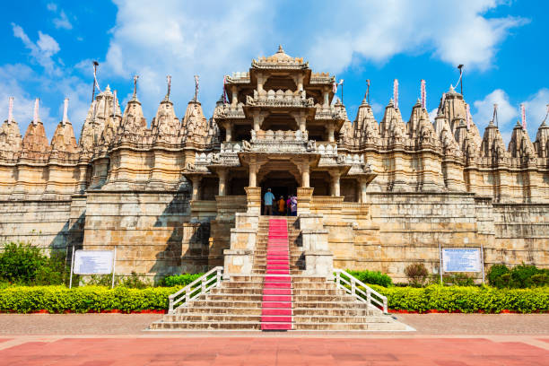
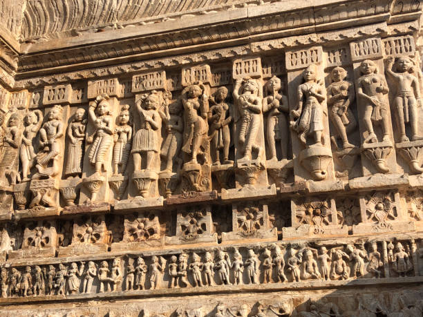
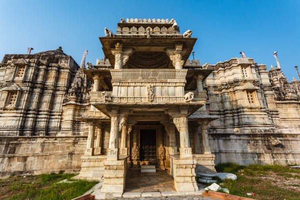
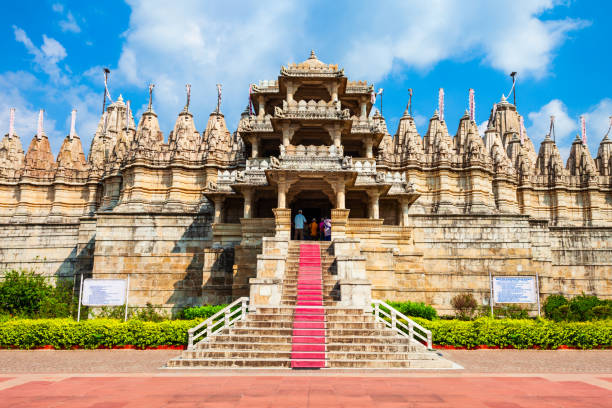

HISTORY
Ranakpur Jain temple or Chaturmukha Dharana Vihara is a Śvētāmbara Jain temple at Ranakpur dedicated to Tirthankara Rishabhanatha.The temple is located in a village of Ranakpur near Sadri town in the Pali district of Rajasthan. Darna Shah, a local Jain businessperson, started construction of the temple in the 15th century following a divine vision. The temple honours Adinath, the first Tirthankar of the present half-cycle (avasarpiṇī) according to Jain cosmology. The Ranakpur temple is one of the largest and most important temples of Jain culture. The campus includes various temples such as Chaumukha temple, Surya temple, Suparshvanatha temple and Amba temple.
 




